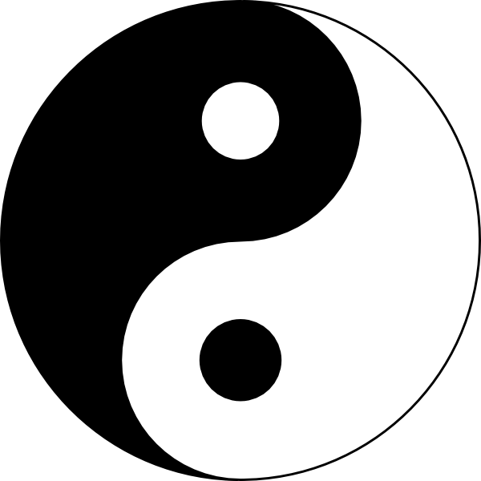

Daily Mindfulness

Week 4
What did you learn from your 'mindfulness conversation'? How did the other person find it?
An interesting experience to say the least. It was actually quite difficult to focus on a conversation purely for the ability to focus. 4 minutes for a monologue took a long time to transpire.
The other person was in a similar situation, albeit a lot easier because they could reflect and give feedback on the conversation we just had.
Which of the three suggested techniques will you use to sustain your practice?
Taking one breath a day seems a good and easy way to sustain my practice. Yet another tool I must add to my toolbox!
Any other musings?
Zen and a walking baby was an interesting article. If I get an opportunity to try it, I definitely will!